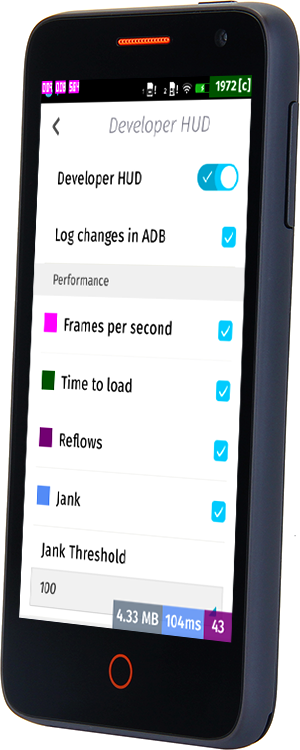

現在開發者已可訂購 「Flame」開發者手機，以順利進一步撰寫適用的 App。
任何人都能到 everbuying 網站線上購買 Flame，美金 $170 即包含全球運費。此款開發者手機並未與任何電信營運商綁約或鎖機，可搭配使用你手邊的任何 SIM 卡。

接著要透過《影片：透過 Flame 入門 (上)》與《(下)》兩篇文章為大家獻上 Flame 手機的四支影片 (中文字幕)，說明應如何設定 Flame 為開發者手機、如何刷進新版 Firefox OS、如何設定 RAM 容量以模擬較慢速的裝置。
但請你需事先準備：
- Flame 可用的 USB 接線
- 先行安裝 ADB 與 Fastboot 完畢。只要安裝完整的 Android 開發者套件，亦可透過下列 Windows或 Linux 與 OSX 的簡易安裝程式，均可取得並安裝 ADB/Fastboot。
初步認識「Flame」
迅速讓你概略認識「Flame」參考平台手機，包含其功能與規格。
設定自己的「Flame」
你可了解該如何將自己的 Flame 設定為開發者裝置。如啟動「開發者」選單，並透過「開發者 HUD」取得 App 執行時的詳細資訊。此工具不僅可告訴你詳細的 App 記憶體耗用資訊，也能得知 App 執行時的 fps 與記憶體情況。所有資訊可直接在裝置上一目了然。
請繼續欣賞《影片：透過 Flame 入門開發 Web App (下)》內所提供的兩支影片。為開發者說明該如何設定 Flame 的 RAM 容量，並為 Flame 刷進新版本的 Firefox OS。